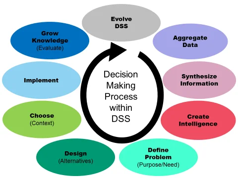

DMBI
K-Mean clustering
Definition:
K-means clustering is simple unsupervised learning algorithm develooped by J. MacQueen in 1976 and J.A Hartigan & M.A wong in 1975.
K-means tries to partition x data points into the set of K clusters where each data point is assigned to its closest cluster.
Algorithm
Input:
K: number of clusters
D: a dataset containig 'n' objects
Output:
A set 'k' clusters
Methods
- Randomly partition the given dataset 'D' into 'k' clusters & final the cluster mean.
- Repeat
- Re-assign the data points to each cluster and find again the cluster mean.
- Update the cluster mean.
- Until no change.
Sum
Using K-means clustering cluster the following data into two clusters and show each step: ${ 2, 4, 10, 12, 3, 20, 30, 11, 25 }$
Sort: ${ 2, 3, 4, 10, 11, 12, 20, 25, 30 }$
Step 1: Randomly partition the dataset into two clusters and find the cluster mean:
$m_1 = 10, m_2 =25$
$K_1 = { 2, 3, 4, 10, 11, 12 }, K_2 = {20, 25, 30 }$
$m_1^1 = 10, m_2^1 = 25$
Step 2: Reassign the data points of each clusters and find again the cluster mean
$K_1 = { 2, 3, 4, 10, 11, 12}, K_2 = { 20, 25, 30}$
$m_1^1 = 1, m_2^1 = 25$
Step 3: Stop the cluster in step 1 and 2 are same
Final Answer
$K_1 = { 2, 3, 4, 10, 11, 12 }$
$K_2 = { 20, 25, 30 }$
K-medoid
A medoid can be defined as the point in cluster, whose dissimilarities with all the other points in the cluster is minimum.
The dissimilarity of medoid(Ci) and object(Pi) is calculated by using.
$E=|P_i - C_i|$ -> manhatt in distance
Algorithm: $|x_2-x_1| + |y_2 - y_1|$
Input
- K: the number of clusters
- D: a dataset containing 'n' objects
Output: A set of K clusters.
Method
- Randomly choose K-objects as medoids
- Repeat
- Find the dissimilarity (difference) of each object from each medoids.
- Find the cost by adding all min-values.
- Replace one of the medoid with another object.
BIRCH algorithm

BIRCH (balanced iterative reducing and clustering using hierarchies) is an unsupervised data mining algorithm that performs hierarchical clustering over large data sets.
It overcomes the two difficulties of agglomeration clustering methods:
- Scalability
- The inability to undo what was done in previous step.
BIRCH introduces two concepts:
Clustering feature (CF)
CF is a 3 dimensional vector summarize information about clusters of objects.
$CF = (n, LS, SS)$
where, $$\displaylines{ n \rightarrow \text{No. of points in cluster.} \ LS \rightarrow \text{Linear sum 'n' points}}$$ $$LS = \sum^n_{L=1}{x_i}$$ $$SS \rightarrow \text{Square sum of data points}$$
$$SS = \sum^n_{L=1}{x_i^2}$$
Example:
Suppose there are three points $(1, 3), (2, 6), (3, 4)$ in a cluster $C_1$
$CF_1 = [ 3, (1+2+3, 3+6+9), (1^2+2^2+3^2, 3^2+6^2+9^2)]$
$CF_1 = [3, (6, 18), (14, 126)]$
If $C_1$ disjoint to second cluster, $C_2$. Where,
$CF_2 = [3, (7, 10), (21, 38)]$
We can form $C_3$ by merging $C_1$ & $C_2$
$CF_3 = [3 + 3, (6 + 7, 18 + 10), (14 + 21, 126 + 38)]$
$= [6, (13, 28), (35, 164)]$
Clustering Feature Tree (CF Tree)
A CF tree is a height balanced tree that stores the clustering features of a hierarchical clustering.

DBSCAN algorithm

DBSCAN is a density based clustering based on connected region with high density.
Parameters Required For DBSCAN Algorithm
- Epsilon($\epsilon$): A distance measure that will be used to locate the points in the neighborhood of any point.
- MinPts: The minimum number of points clustered together for a region to be considered dense.
There parameters can understood if we explore two concepts called density reachability and density connectivity.
- Reachability: It tells weather a point is reachable or not from another point.
- Connectivity: It involves a transitivity based chaining-approach to determine whether points are located in a particular cluster.
- E.g: $p & q$ points would be connected if $p \rightarrow r \rightarrow s \rightarrow t \rightarrow q$.
- where $p \rightarrow q$ implies $q$ is neighbor of $p$.
There are 3 types of points after the DBSCAN clustering is complete.
- Core: This is a point that has at least $m$ points within distance $n$ form itself.
- Border: This a point that has atlest core point at a distance $n$
- Noise: This is a point that is neither a core nor a border.
Clustering methods
*

Clustering or Cluster analysis is the method of grouping the entities based on similarities.
It is the process of finding similar structures in a set of unlabeled data to make it more understandable and manipulative.
- Partitioning Method

- Divides the data into non-hierarchical group.
- Also known as centroid-based method.
- This technique utilizes centroids, which are the centers of each cluster, to minimize the sum of distances between the data points and their corresponding cluster centroids.
- E.g: K-mean, K-medoids
- Hierarchical Method

- The dataset is divided into clusters to create a tree like structure.
- It is also called a dendogram
- There are two Approach
- Agglomenative approach
- Divisive approach
- Density-based method:
- Connects the highly-dense areas into clusters.
- The arbitrarily shaped distribution are formed as long as the dense region can be connected.
- The algorithm dose it by identifying different clusters in the dataset and connects the are of high densities into clusters.
- May filter out outliers
- Grid-based Method
- In the grid-based method a grid is formed using the object together.
- Use a multi resolution grid data structure
- Fast processing time.
- Model-Based Method

- A model is formed from each cluster to fine the best fit of data for given models.
- It reflects the spatial distribution of data points.
- Constraint-based Method
- In this method the clustering is performed by incorporation of user or application oriented constraints.
- Constraints provide us with an interactive way to communicate with clustering process.


Divisive clustering types & difference between

Divisive Clustering is a clustering technique that starts with all data points in a single cluster and recursively splits them into smaller clusters based on some distance metric until each data point forms its own cluster.
Thus, they are good at identifying large clusters.
It follows a top-down approach.
Hierarchical Clustering in Machine Learning
Market, Basket analysis

- To uncover purchase pattern in any retail setting.
- To understand consumer behavior by identifying relationships between items that people buy.
Create
if-themscenario rules:- It item A is purchased then item B is likely to be purchased
- Example: People who buy green tea are also likely to buy honey
Association rule has 3 measures that express degree of confidence.
Support
$$support(A\rightarrow B) = {\text{No of transactions containing both A & B} \over \text{Total Transactions}}$$
Support
$$support(A\rightarrow B) = {\text{No of transactions containing both A & B} \over \text{Total Transactions}}$$
Left
$$left(A\rightarrow B) = {\text{No of transactions containing both B} \over \text{Total Transactions}}$$
Apriori algorithm

Advantage
- Easy to understand
- Join & Prune steps easy to implement to large item-set in large DBS Disadvantage
- Requires high computation if item-sets are very large & min support is kept very low.
- Entire db needs to be scanned.
Sum
For the following given transaction Data set, generate rules using Apriori algorithm consider the values as $support = 50\%$ & $confidence = 75\%$
| Transaction ID | Items Purchased |
|---|---|
| 1 | bread, cheese, egg, juice |
| 2 | bread, cheese, juice |
| 3 | bread, milk, yoghurt |
| 4 | bread, juice, milk |
| 5 | cheese, juice, milk |
$confidence = 75\%$ $support = 50\%$ $minsupport = 0.5 \times 5 = 2.5$
Step 1. Frequency count
| Item set | Frequency |
|---|---|
| bread | 4 |
| cheese | 3 |
| egg | 1 |
| juice | 4 |
| yoghurt | 1 |
| milk | 3 |
Step 2. Prune step
Remove items that don't meet $minsupport$ count
| Item set | Count |
|---|---|
| bread | 4 |
| cheese | 3 |
| juice | 4 |
| milk | 3 |
Step 3. Join step
| Item set | Count |
|---|---|
| { bread, cheese } | 2 |
| { bread, juice } | 3 |
| { bread, milk } | 2 |
| { cheese, juice } | 3 |
| { cheese, milk } | 1 |
| { juice, milk } | 2 |
Step 4. Prune
Remove items that don't meet $minsupport$ count
| Item set | Count |
|---|---|
| { bread, juice } | 3 |
| { cheese, juice } | 3 |
Step 5. Generate Association rule
- bread->juice $= 3/4 = 0.75 = 75\%$
- bread->bread $= 3/4 = 0.75 = 75\%$
- cheese->juice $= 3/3 = 1 = 100\%$
- juice->cheese $= 3/4 = 0.75 = 75\%$
Multilevel association rule

Association rule mining is used to discover relationships between items in a dataset. An association rule is a statement of the form "If A, then B," where A and B are sets of items.
The strength of an association rule is measured using two measures: support and confidence.
Support measures the frequency of the occurrence of the items in the rule, and confidence measures the reliability of the rule.
Approaches of Multilevel association rule:
- Using uniform support level for all levels
- There is only one minimum support threshold.

- Using reduced minimum support at lower level
- At every level of abstraction, there is its own minimum support threshold.
- So minimum support at lower level reduces

Mining Various Kinds Of Association Rules
Multi-dimensional association rule

It contains more than one predicate. Each predicate occurs only once.
Single dimensional rule
Contains single distinct predicate like "buys"
buy(x, "milk") -> buys(x, "bread")
Multi-dimensional rules
- Contains more than one predicate
Inter-dimensional association rule
Has no repeated predicate
age(x, "19-25)^occupation(x, "student") -> buys(x, "coke")
Hybrid dimension association rule
Contains the multiple occurrence of same predicate
age(x, "19-25") ^ buys(x, "pop corns") -> (buys(x, "coke)
Categorical Attribute
- Have finite no. of possible values, no ordering among rules.
- Eg: brand, color
Quantitative Attribute
- These are numeric & implicit ordering among values
- Eg: age, income
Multidimensional Association Rules, Single, Multi, Hybrid, Apriori Algorithm, Data Mining
BI architecture & components
Business intelligence (BI) are the tools that deploys technologies, applications and practices to collect, integrate, analyze and present business information.
Architecture

- Data Collection: Gathering data from various sources such as CRM, ERP, databases, files, or APIs, depending on the requirements and resources of a company.
- Data Integration: Extracting data and loading it into a BI data warehouse architecture through ETL (Extract-Transform-Load) process.
- Data Storage: Data warehousing and business intelligence concepts. Data is loaded into a data depository after ensuring data is clean and prepared for analysis.
- Data Analysis: Statistical algorithms are deployed to decipher hidden patterns in data.
- Data Visualization: Analytical tools like dashboards facilitate the way most organizations deal with their data.
Components

- OLAP (Online Analytical Processing): It allows executives to sort and select aggregates of data for strategic monitoring, helping them make adjustments to overall business processes1.
- Corporate Performance Management (CPM) or Advanced Analytics: This set of tools helps business leaders analyze the statistics of certain products or services, predict performance in the market, and make local, regional, and national modifications to menu board offerings or marketing strategies1.
- Real-time BI: This component enables businesses to respond to real-time trends in email, messaging systems, or digital displays, allowing for timely announcements of special offers or adjustments to marketing strategies based on current trends1.
- Data Warehousing: Data warehousing involves storing large amounts of data to the benefit of different divisions within the organization, allowing for the examination of interrelated components that can help drive business decisions and improve product development or tailor seasonal offerings1.
- Data Sources: This component involves taking raw data and creating systematic data sources with the help of various software BI tools, enabling organizations to put datasets to use in creating pie charts, graphs, or tables for various business purposes1.
DSS

- A Decision Support System (DSS) is a computerized tool designed to assist individuals and organizations in making well-informed decisions.
- A DSS go through and analyzes massive amounts of data, compiling comprehensive information that can be use to solve problem in decision making.
- A decision support system gathers and analyzes data synthesizing it to produce comprehensive information report.
- The DSS can either be completely computerized or powered by humans.
Types of DSS

- Communication-driven DSS:
- These systems are targeted at internal teams, including partners, and help conduct meetings or collaborate.
- They are typically deployed via web or client-server technologies.
- Data-driven DSS:
- These systems are targeted at managers, staff, and product/service suppliers and use data from internal or external databases to make decisions.
- They are typically deployed via mainframe systems, client/server links, or the web.
- Document-driven DSS:
- These systems are used to search web pages and find documents on specific keywords or search terms.
- They are typically deployed via the web or client/server systems.
- Knowledge-driven DSS:
- These systems are used to provide management advice or to choose products/services.
- They are typically deployed via client/server systems, the web, or software running on stand-alone PCs.
- Model-driven DSS:
- They are used by managers and staff members of a business or people who interact with the organization for a number of purposes depending on how the model is set up.
- They can be deployed via software/hardware in stand-alone PCs, client/server systems, or the web.
How data mining used in BI
Data mining refers to the process of extracting information from large data sets whereas data analysis is the process used to find patterns from the extracted information.

- Business Understanding
- Define the purpose of data mining for successful business analytics.
- Focus on how to utilize the data effectively.
- Clarify the data mining goal before selecting algorithms.
- Data Understanding
- Understand the data's purpose after defining the data mining goal.
- Data storage and monetization methods vary across businesses.
- Data management aligns with enterprise IT strategies and practices.
- Data Preparation
- Data engineers transform and cleanse data for non-IT interpretation.
- Data modeling tailored to specific attributes for analysis.
- Data Modeling
- Statistical algorithms reveal hidden data patterns.
- Iterative process to identify trends for revenue enhancement.
- Data Evaluation
- Scrutinize data modeling steps for accuracy.
- Focus on optimizing operations and increasing profits.
- Implementation
- Act on findings to drive observable results.
- Conduct field trials on a small scale before wider implementation.
- Transition validated recommendations to branch outlets for expansion.
Outlier detection methods

- Supervised Outliers Detection: are used to separate data objects into outliers and normal class in a labelled data set.
- Unsupervised Outliers Detection: are used to find outliers in an unlabeled dataset by giving each object an outlier score which indicates its degree of abnormality.
- Semi-Supervised Outliers Detection: are used used when labels are available for only a small part of normal objects or outliers.
- Statistical Methods:
- it assumes that normal data objects follow a statistical model and outlier do not.

- Proximity Based Method
- It developed on assumption that the distance from a normal data object to its nearest neighbors is very small compared to the distance from an outlier to it nearest neighbor.